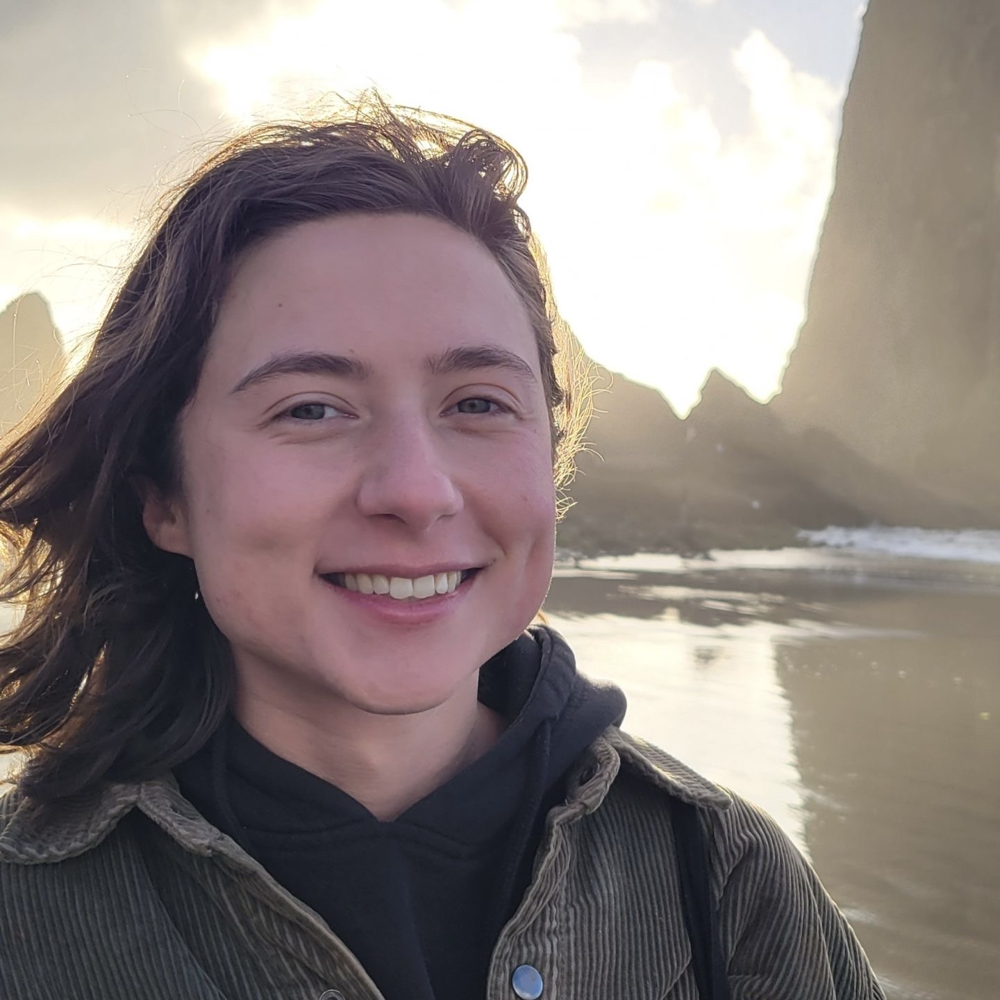

about the editor
Michigan grown, New York roasted and served fresh daily in the Pacific North West. TV is my long time obsession. I went to school to become a screenwriter and left a documentary editor, stumbling into social media success shortly afterwards. Whatever I'm making, whether feature film or reel, I abide by the same principle: every minute on the screen has the potential to change a life. As an editor, I am fluent in Avid Media Composer, Adobe Premiere and Davinci Resolve, and many other programs that contribute to a remote post production workflow. I constantly strive to expand my expertise, most recently in graphics and animation. I enjoy working from my home office in SE Portland with my feline AEs.
Read my full resume or find me on LinkedIn, Instagram & IMDb!